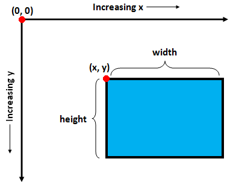

We've been working on an object class named Name.
public class Name
{
private String first;
private String last;
public Name(String f, String l)
{
first = f;
last = l;
}
public String getFirst()
{
return first;
}
public String getLast()
{
return last;
}
public String getInitials()
{
String initOne = first.substring(0,1);
String initTwo = last.substring(0,1);
return initOne + "." + initTwo + ".";
}
public String toString()
{
return first + " " + last;
}
}
Annoying Concept Check!!!!!!
Read through the Name class above and see if you can answer the following:
1) Which method is the constructor? How do you know?
2) In order for the getFirst and getLast method to work properly, their return types must be Strings.
a) How can you tell by looking at the method headers that the return types are Strings.
b) In order to perform the action of a basic accessor method the return type must be a String. Why must it be a String?
3) What would be the output of the following client/runner class? What method is secretly called by putting the myName variable directly into the println method?
public class NRunner
{
public static void main()
{
Name myName = new Name("April", "O'Neil");
System.out.println(myName);
System.out.println(myName.getInitials());
}
}
Returning Objects:
So far we've added a few different types of methods to Name:
- Basic accessors, getFirst and getLast, which allow a client/runner to
retrieve the value stored in an instance field.
- The getInitials method, which relied on the instance fields, but returned a
brand new value.
- The special toString method, which determines how the object is
concatenated (represented as a String)
Methods that return new Objects:
Sometimes this feels weird, but an object may have a method that returns an object of the same type. For example, when calling the substring method with a call such as str.substring(4,18). A String object is being asked to generate a new String object.
Our New Goal:
To make a method within the Name class that will return a Name object with the same last name, but the first name is replaced with "Doctor".
What will this look like to the client classe?
The client will have some code like the following, which constructs a Name object, asks it for its Doctor Name object, and prints the resulting Nmae object:
Name myName = new Name("Kevin","Who");
Name docName = myName.getDocName();
System.out.println(docName);
Based on the instance fields of the myName variable, the docName variable will have the first name "Doctor" and the last name "Who".
Modifying the Name class to have the getDocName method:
Previously our methods have had a return type of String, double, or int. This time the purpose of the method is to return a brand new Name object. Use the following header:
public Name getDocName()
Note that the return type is a Name object; not a String or an int.
Implementing the method:
The method's purpose is to return a new Name object with the first name being "Doctor" and the last name matching the current last name. Add the following code to your Name class, which constructs the new Name object using "Doctor" and the last instance field to construct the new Name. After that it returns that Name object.
public Name getDocName()
{
Name retName = new Name("Doctor", last);
return retName;
}
Modifying the Runner:
Now we just need to change the runner to use the getDocName method. Don't forget that when a Name variable is put directly into the println, the toString method is called, meaning the first and last name are printed. Copy the following runner:
public class NameRunner
{
public static void main()
{
Name n = new Name("Marty","McFly");
System.out.println("Name: "+ n);
System.out.println("Initials: "+n.getInitials());
Name docName = n.getDocName();
System.out.println("Doctor Name: "+ docName);
Name n2 = new Name("Jon","Snow");
System.out.println("Name: "+n2);
System.out.println("Initials: "+n2.getInitials());
Name docName2 = n2.getDocName();
System.out.println("Doctor Name: "+ docName2);
}
}
Notice that each name has a new Name generated when the getDocName is called.
With the new getDocName method, the output should be:
Name: Marty McFly
Initials: M.M.
Doctor Name: Doctor McFly
Name: Jon Snow
Initials: J.S.
Doctor Name: Doctor Snow
Assignment:
1) Date: Add a method to the Date class named getTomorrow, which should return a Date object with the date after whatever the instance fields currently are. Pretend that you live in a magical wonderland where tomorrow is always one day larger and you never have to worry about the day getting too large.
Use the following header:
public Date getTomorrow()
Don't forget that the return type is a new Date object.
Modify the DateRunner's main method to print out the Date that results from galling the getTomorrow method. The following might help if you have a Date object d:
Date tomorrow = d.getTomorrow(); System.out.println(tomorrow);
Run the method, which should now print out "2/22/1983" and "2/23/1983"
2) Color: Modify the Color to have a method named getGray, which will be different than the method that returns a double. This method should return a new Color object where all three values are the grayscale value (the average of the red green and blue values). You may calculate the values manually, or you could remember that there's already a method that will calculate it for you. Once you have the grayscale value, you will have to construct a new Color using that value three times (you may have to cast your doubles into ints).
Once that is finished, modify the main method of ColorRunner to also call the getGray method. The resulting Color object should then be printed out.
3) Create an object class named Point, which is meant to represent a two-dimensional Point. The instance fields should be two doubles, to represent x and y.
- Add a constructor for Point, which will take in two doubles as parameters and apply them to the appropriate instance fields.
- Add two basic accessor methods, named getX and getY. They should simply return the given parameter.
- Add a toString method, which uses the x and y instance field to create a String with parentheses the way that we're used to seeing points: "(2.1, 5.8)". Limit the two values to a single digit after the decimal point.
- Add a method named getClosestIntPoint, whose job it is to return a new Point object where the x and y are the rounded version of the current x and y. Use the Math.round method to get the rounded doubles and then construct and return a new Point with those doubles as the x and y.
Create a class named PointRunner.
The main method of PointRunner should do the following:
- Construct a Point object with an x and y or 2.345 and 6.789.
- Print the point by putting its variable directly into a println
- Call the getClosestIntPoint method and store the result in a new variable
named closest
- Print the Point stored in closest by putting the
variable directly into a println
Hopefully the output is:
(2.3, 6.7)
(2.0, 7.0)
4) Rectangle: The rectangle class that we've created also has a location (x and y) assosciated with it. In programming, it is common to use x and y to represent the upper-left corner of the Rectangle. Another key thing to know is that in computer science, the point (0,0), and an increase in y will bring you down the screen.

Add the four following method headers:
public Point getUpperLeft() public Point getUpperRight() public Point getLowerLeft() public Point getLowerRight()
The purpose of these methods is to construct and return a Point object that contains the x and y of the given location. All of these can be derived if you know the upper left corner, the width, and the height of the Rectangle
For example: The getLowerLeft method should return the lower-left coordinate, which will have the same x as the upper-left, but the y coordinate will be larger by one height.
public Point getLowerLeft()
{
Point ret = new Point(x, y + height);
return ret;
}
Fill in the other methods in a similar way.
Modify the RectangleRunner so that the last thing it does it call the four methods to get four Point objects representing all four corners of the rectangle. Print out the four points using one println.
Run the runner and make sure that those four points are (15.0, 32.0), (37.0, 32.0), (15.0, 62.0), and (37.0, 62.0)